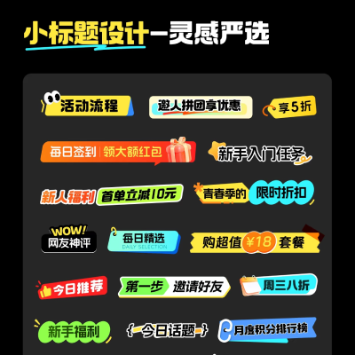
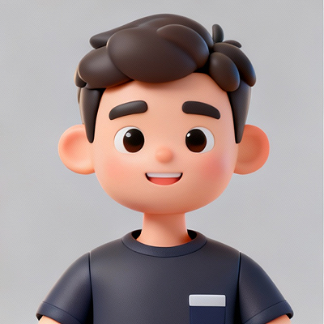
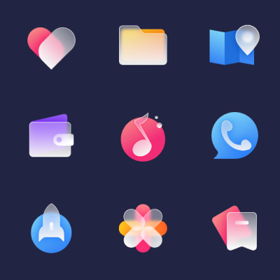
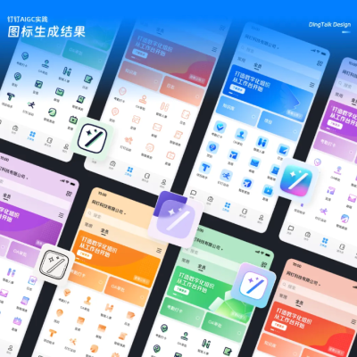
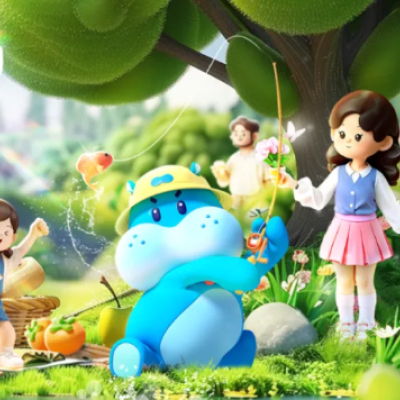

腾讯丨浅析标签Tag设计
大家现在打开APP，是否会下意识地关注标签(Tag)中的信息，比如寻找电商的折扣优惠、追踪热门话题内容，或是在功能型APP中快速选择所需类型？...
UI设计技巧 | 行业趋势 | 实战经验分享

大家现在打开APP，是否会下意识地关注标签(Tag)中的信息，比如寻找电商的折扣优惠、追踪热门话题内容，或是在功能型APP中快速选择所需类型？...

免费在线 3D 卡通头像生成器（浏览器直接用，无需安装）

图标在当今不论是物理世界还是数字世界中都广泛存在且十分重要，在交互界面中其重要性尤其值得强调。图标是用户与产品之间最简单的交流形式之一...
饭搭子是饿了么APP平台上线的一款好友之间分享饮食数据的玩法，基于智能ai的行业趋势下结合新技术风口...
内容优先，对内容精确表达是前提。最纯粹的方式往往最简单直接，文案做为核心后...

钉钉工作台作为组织数字化的入口，不同企业通过工作台打造属于自己的门户，不仅可以帮助员工快速找到各种功能...

盒马IP、盒马家族形象、大嘴品牌符号、设计元素等品牌营销资产是我们在视觉设计中常用的各种素材...
PDF在线处理，压缩、转图片、转word、加密PDF、图片转PDf、加水印等等，最重要的是免费...